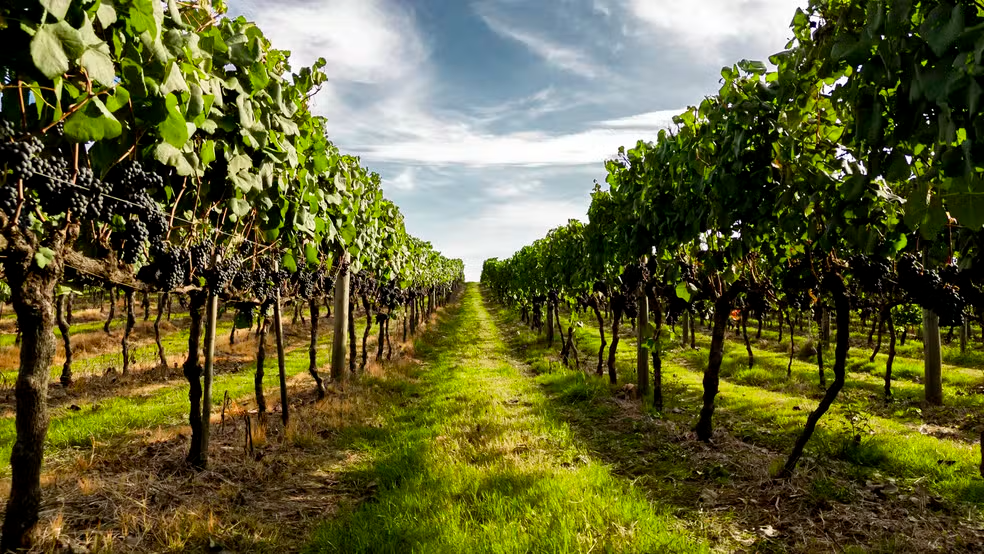
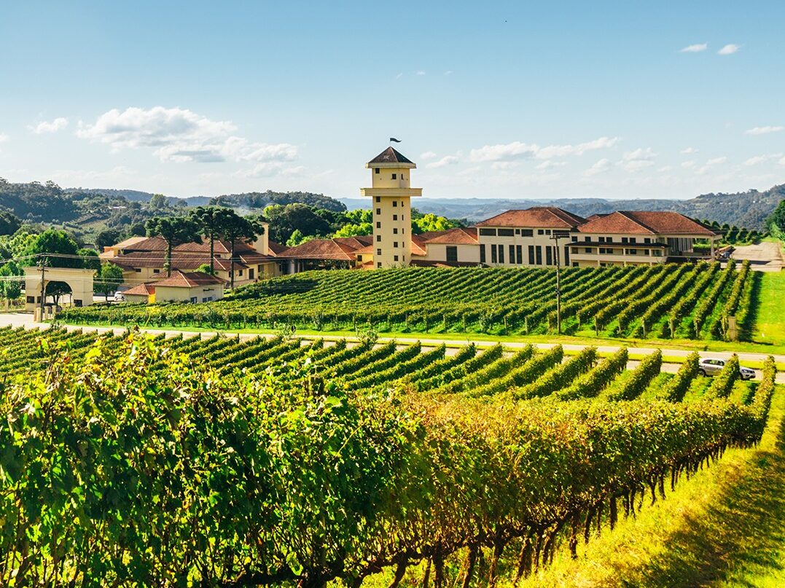
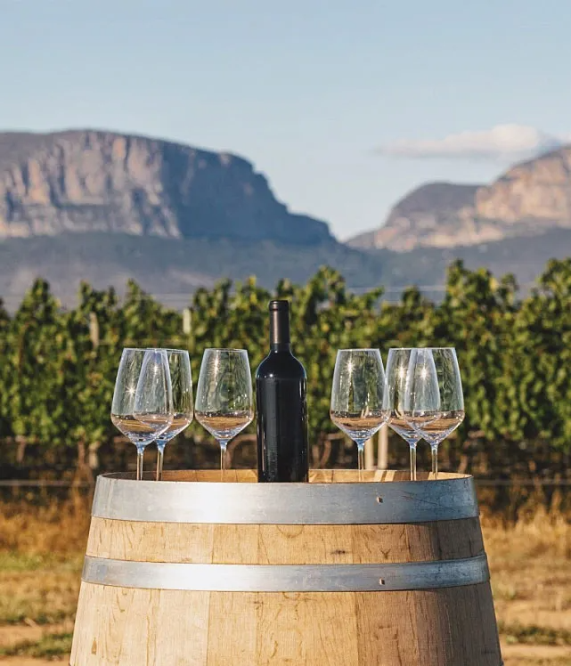
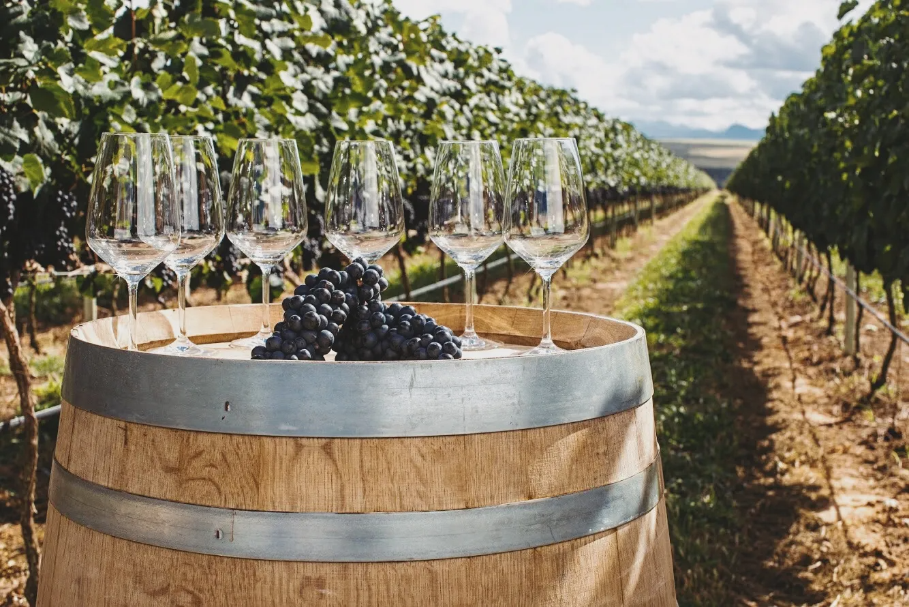

Vinharia Agnello
Inicio
Produtos
História
Contato
Galeria
Galeria e Curiosidades
Aqui estão algumas imagens de nossa vinícula e de toda nossa produção.
   
Curiosidades sobre vinhos
Existem mais de
6.000 tipos de uvas viníferas
no mundo, cada uma com sabores únicos.
O vinho tinto, quando consumido com moderação, pode
ajudar na saúde do coração
graças ao resveratrol.
A maioria dos vinhos deve ser consumida em até
5 anos
; apenas alguns melhoram com o tempo.
O
terroir
(solo, clima e região) influência totalmente o sabor de um vinho, mesmo sendo da mesma uva.